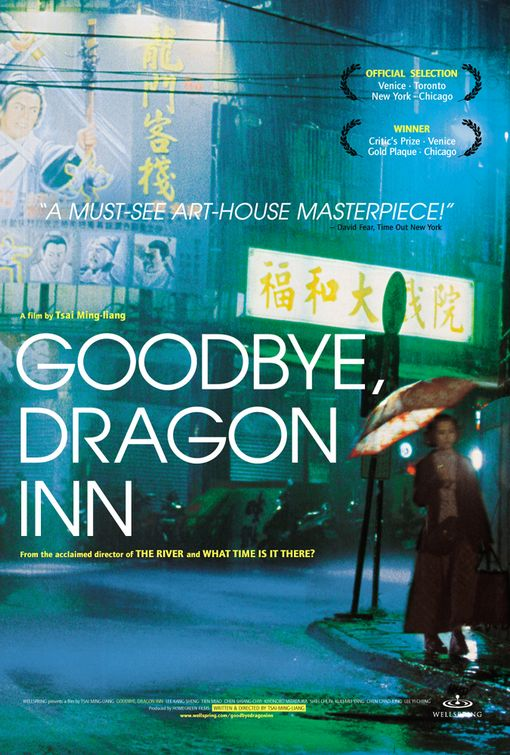
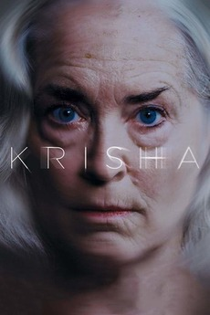

WENDY & LUCY
Kelly Reichardt | Estados Unidos | 80min | 2008
WINTER LIGHT
Ingmar Bergman | Suecia | 80min | 1962
GREYS GARDEN
David Maysles & Albert Maysles | Estados Unidos | 95min | 1975

GOODBYE DRAGON INN
Tsai Ming Liang | Taiwán | 82min | 2003
CRÍA CUERVOS
Carlos Saura | España | 110 min | 1976
DER TODESKING
Jörg Buttgereit | Alemania | 80 min | 1990MERRY CHRISTMAS MR. LAWRENCE
Nagisa Ōshima | Japón | 124 min | 1983
BELLY
Hype Williams | EEUU | 92 min | 1998
WAKE IN FRIGHT
Ted Kotcheff | Australia | 114 min | 1971BUFFALLO 66
Vincent Gallo | USA | 110 min | 1998
LAST DAYS HERE
Don Argon | Demian Fenton | 91 min | USA | 2011THE KILLING OF AMERICA
Leonard Schrader & Sheldon Renan | Estados Unidos | 90 min | 1981PIXOTE
Héctor Babenco | Brasil | 128 min | 1981WALKABOUT
Nicolas Roeg | Australia | 100 min | 1971FIVE EASY PIECES
Bob Rafelson | Estados Unidos | 98 min | 1970
STOP MAKING SENSE
Jonathan Demme | 1984 | EEUU | 88 min
LA CEREMONIE
Claude Chabrol | Francia | 111 min | 1995

KRISHA
Trey Edward Shults | Estados Unidos | 81 min | 2015SICK: LIFE AND DEATH OF BOB FALANAGAN
Kirby Dick | Estados Unidos | 90 min | 1997VALKOINEN PEURA
Erik Blomberg | Finlandia | 74 min | 1952LA GUERRE DU FEU
Jean-Jacques Annaud | Francia | 100 min | 1981
STRANGE DAYS
Kathryn Bigelow | Estados Unidos | 145 min | 1995
DECODER
Muscha | Alemania | 87 min | 1984HEATHERS
Michael Lehmann | Estados Unidos | 103 min | 1988